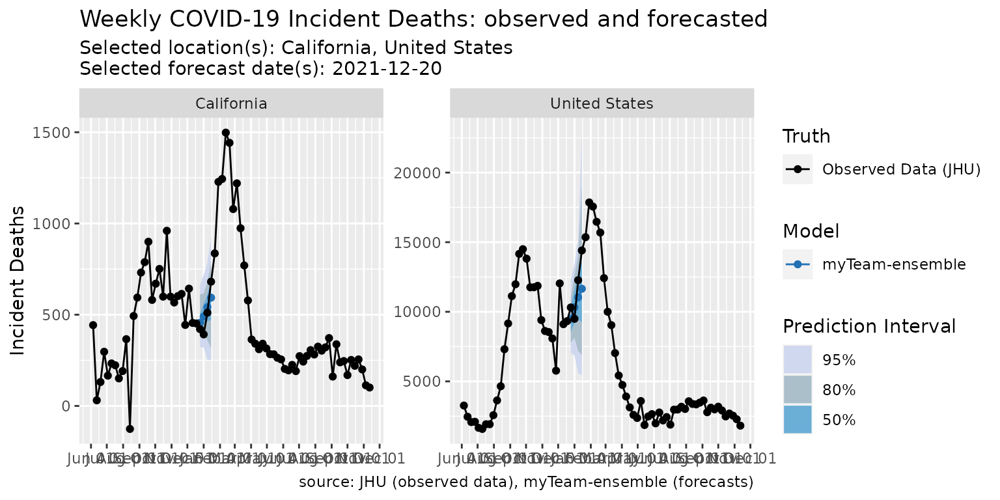

basic-ensemble.RmdThis vignette attempts to provide a minimal working example for building an ensemble using the covidHubUtils and hubEnsembles packages.
library(covidHubUtils)
library(hubEnsembles)
library(dplyr)We start by loading some forecasts of weekly incident deaths from selected models. Note that these forecasts are retrieved from the US COVID-19 Forecast Hub data stored in the Zoltar database (the default specifications for the load_forecasts() function.
models = c("UMass-MechBayes", "USC-SI_kJalpha", "MOBS-GLEAM_COVID", "JHU_CSSE-DECOM", "CU-select", "BPagano-RtDriven")
forecast_data <- load_forecasts(
models = models,
targets = c(paste(1:4, "wk ahead inc death")),
dates = "2021-12-20",
date_window_size = 6,
locations = c("US", "06"),
types = "quantile")We can plot these forecasts individually. If you are going to be making multiple forecast plots, it can speed things up to download truth data first.
truth_data <- load_truth(
truth_source = "JHU",
target_variable = "inc death",
locations = unique(forecast_data$location)
)
plot_forecasts(
forecast_data = forecast_data,
facet = .~location,
facet_scales = "free_y",
truth_data = truth_data %>% filter(target_end_date > "2021-06-01"),
truth_source = "JHU",
use_median_as_point = TRUE,
fill_by_model = TRUE,
show_caption = FALSE,
fill_transparency = .3
) Next we build a simple average ensemble of all the models
ensemble_forecast <- build_quantile_ensemble(forecast_data,
method = "median",
forecast_date = "2021-12-20",
model_name = "myTeam-ensemble",
location_data = hub_locations)and plot it
plot_forecasts(
forecast_data = ensemble_forecast,
facet = .~location,
facet_scales = "free_y",
truth_data = truth_data %>% filter(target_end_date > "2021-06-01"),
truth_source = "JHU",
use_median_as_point = TRUE
)